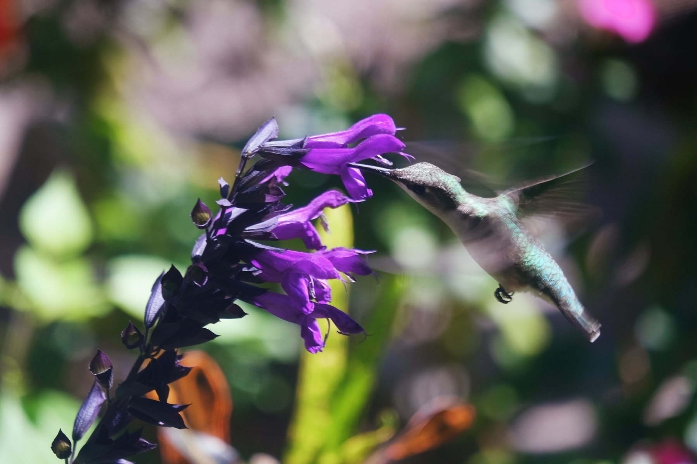
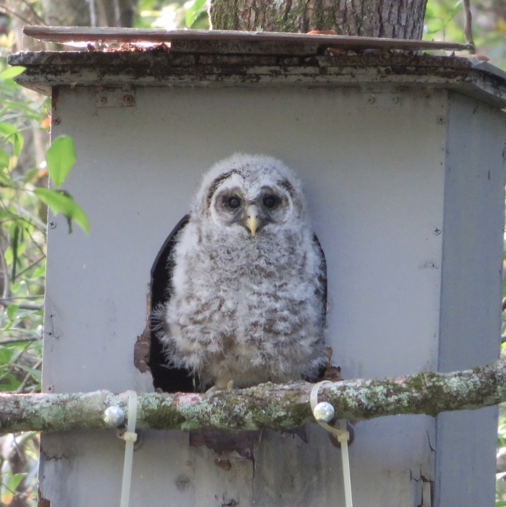
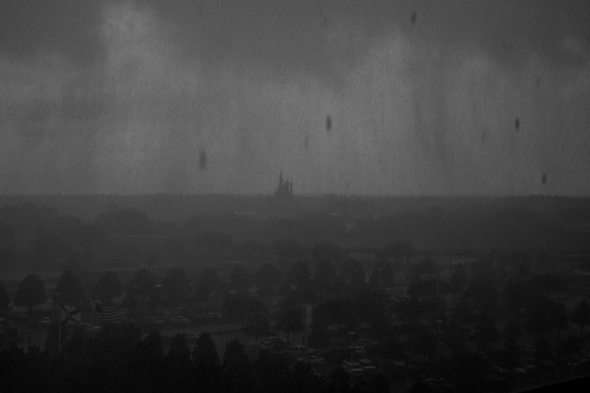

Now that the whole family is vaccinated, we’re enjoying our first real vacation in 14 months with a cross-country road trip to our Michigan family. It’s amazing to be out of the house and seeing other humans again.
🤞🏻I have my fingers crossed for Apple to announce more colorful computers at WWDC. My next computer must be something other than a shade of grey.🌈
The sunset dipped lower into golden hour and the neighborhood quieted. The daytime animals and insects used the remaining light to settle themselves for the evening.
I met one of the new baby hawks on a walk yesterday. Totally fearless about us walking under her. I wish I’d had my real camera with me but it was close enough to capture this with my phone.
First Anniversary
I’m a little late in celebrating my first year on here. Like much of the world, the COVID lockdown forced a new focus to my online communities. I left the perpetual trolling and self-aggrandizing hustle of the big social networks and joined Micro.blog in April of 2020. It was a great service but I didn’t really discover M.b’s magic until participating in the August Photo Challenge. That’s when I discovered the real magic of M.b is the community. If it wasn’t for all of the positive and thoughtful sharing that event brought, I’m sure this site would have flamed out like all my previous attempts at blogging.
I want to say a special thanks to @maique, @hollyhoneychurch, @odd, @ohBananaJoe, and @aa for taking the time to comment on a stranger’s photos and making him feel welcome. To repeat something I mentioned in my Micro Monday appearance, small kindnesses can often seem inconsequential or unimportant at the time but your comment can really make somebody’s day. Don’t wait to say something nice.
📚 The hardcover of Incredible Doom arrived and it looks amazing. Congratulations @bogart on a fantastic comic.
Today, my office confirmed that my team is free to continue working remotely for the foreseeable future. It feels like a large weight has been lifted from me. 🥳
Drew and printed a new D&D character for a one-shot and then we ended up having some “craft time†before the game painting them onto wooden figures instead. It was a ton of fun.

Haircut!!! Full COVID vaccination means I could finally get my first haircut in over a year. It feels glorious!
Spring continues to increase the diversity of our backyard birds. This week, the blue jays have returned to battle the squirrels for seeds.
Posted an new drawing for Sticker Doodle inspired by sever Micro.blog watch conversations. I hope we never lose the diversity of design that watches engender.

Pawbucks A Starbucks near our college campus has a fun collection of pets that come through their drive-through.
Earnest Creativity
“One of the biggest sins on the modern internet is trying too hard to be funny. It has caused the internet’s sense of humor to turn cruel in the last decade and our knee-jerk response to earnest humor to be negative. Putting oneself out there creates a risk of ending up in a cringe compilation or as the subject of a devastating quote tweet. Strong Bad is representative of a time in the internet’s past when there was something new every day, and there was room for simple jokes. The world of Homestar Runner sprung from a place of passion and caring. It’s possible that nostalgia for the character is rooted in a desire to go back to a time when we embraced that type of enthusiasm. And who wouldn’t want to? At the end of the day, like Strong Bad himself, none of us are truly as cool (or as mean) as we pretend to be online.” - Dan Sheehan
Dan Sheehan’s article is a wonderful summation of the Homestar Runner phenomenon during the early Internet. A site that my friends and I still quote from regularly. Much like the original Muppet Show, those toons and sketches the Brothers Chaps created had an outsized influence on a generation of people.
I’m sharing this article because I’ve grown nostalgic for this kind of creativity. Dan articulates an Internet era where earnest creativity stood a chance of surviving and programatic attention hacks hadn’t infected everything. A little naiveté wasn’t just allowed, it was expected, and creativity wasn’t the baited hook at the end of somebody’s hustle. I’m thankful to have experienced that time and to know the difference between the small town Internet and the mega-city we wade through today.
I wish there was a way for others to experience the open frontier of the early Internet but no effort can remake it any more than Tokyo can remake itself into an agrarian village. The changes we’ve made are permanent. Still, I’m hopeful because I know the human creativity that made the early Internet so special in the first place is just as permanent. Machines didn’t make this place, people did, and much like we do in our physical cities, we’re learning to create pockets of relative safety where earnest creativity can thrive.
Somehow a Rose-breasted Grosbeak flew all the way down from the great white north to hang out in our backyard. Good thing we had snacks prepared!
I drew a couple more “stickers” for Sticker Doodle. I’m particularly happy with how the OctoPencil turned out. I’m pushing myself to be faster and more playful with them.

I finally added a new sticker to Sticker-Doodle. I’m making some schedule changes to be creative more reliably.
I’m excited to launch a new creative project today called Sticker Doodle. It’s hosted on Micro.blog and inspired by @maique ’s Sticker Spotter. It’s my little way to regain the creative spark that took such a beating the past year so please take a look and follow if you like. 🙂
(Posting this for @maique) The coffee bucket list is real. After finishing my sixth or seventh tasting journal, I figured I needed to calm myself down a bit.
Another hummingbird arrived in the back yard and the first is not happy to share. Lots of beautiful mid-air battles.

Tonight’s setting sun lingered on anything that would agree to glow and the neighborhood was alive with the sounds of people walking and bicycling. Everyone united in their refusal to give up the day.
The hummingbirds have returned! The 1yr anniversary of lockdown didn’t really connect with me until I saw this little guy. Time is a circle.
Caught some “neighbors†arguing about something on today’s walk. I think they should just make up and appreciate the beautiful day. (I sure did.)
The baby of the owl family (we named him Grogu) is finally old enough to venture outside of their house.

A new day brings a fresh start. The birds are enjoying the morning and I finally managed to take a clear photo of a catbird. My camera finds black on black feathers difficult.
My best friend has passed. Her health was going downhill for a while now so it’s not a surprise but knowing something is going to happen doesn’t make things better when it does. In the end we made her as comfortable as we could. She passed at 5:30 EST at home with us.
I can’t stop looking through Sticker Spotter so I’m putting more effort into a fun series inspired by it.
Side note: Hey @maique, whatever you changed in your process made the RSS a lot prettier.🙂
The newly hatched owlet at my parents house is making regular appearances now. We’ve taken to calling him “Grogu”
Stay Creative to Live
Over the weekend, @mariovillalobos wrote a great post on creativity’s role in keeping you happy. His thoughts resonated with me as I’ve also found that staying creative is key to my own mental health.
Many years ago, my wife and I were caught in a mass-layoff, loosing both our incomes and health insurance in one fell swoop. To keep us and our child above water, I was fortunate enough to get one of the very few barista jobs open at our local Starbucks.
While I was thankful for the job, (Nothing but love for Starbucks providing health insurance to a severely underserved category of US workers.) I was still separated from the career I’d spent the last 10 years working in. Instead of helping teams solve creative problems, my days became robotically taking orders and watching grown adults pout like my toddler at the smallest of inconveniences. The only time I had for actual thinking was during my 15 minute breaks where I kept myself sane by doodling on my cup.
These hastily scribbled doodles were a life preserver that kept my spirit from starving. They eventually grew into a webcomic that I pushed myself to draw for several years. Nobody but my friends read it but it was an important part of keeping myself mentally healthy and taking daily steps back to the creative life I wanted. None of my future success came automatically but the efforts eventually got me out.
I share this to encourage anyone who is stuck or struggling. You deserve more than survival. You can make it. Be kind to yourself and, no matter how little time you have, allow yourself time to slip into the deep pleasure of curiosity and create something.
📷 mbfeb Day 31 | Defiance
“You talkin’ to me?!”
Controversial Hot-Take: The California watch face is the worst of both worlds: unfashionable to people who don’t want numbers and non-utilitarian to people who do.
📷 mbfeb Day 30 | Privacy
The privacy of having your own bed.
📷 mbfeb Day 29 | Light
📷 mbfeb Day 28 | Up
📷 mbfeb Day 27 | Pompasetting
The wild chickens that wander downtown Ybor City are forever pompasetting for each other.
📷 mbfeb Day 26 | Favorite
Of all the pens I own, the Pilot Kaküno has been my favorite that I keep coming back to.
📷 mbfeb Day 25 | Code
When you’re on an adventure, you’re bound to encounter a secret code or two.
📷 mbfeb Day 24 | Baby
Four generations in one photo. Everyone is a baby to someone else.
📷 mbfeb Day 23 | Banana
I find bananas disgusting but I like their color. Here are some banana-colored flowers I found on today’s walk.
📷 mbfeb Day 22 | Spell
📷 mbfeb Day 21 | Colors
The colors of a recently bloomed Spider Lilly.
📷 mbfeb Day 20 | Weather
Anyone who’s worked at Disney has stories of guests asking them to change the weather.
mbfeb Day 18 | At Home
Nearly a year of working from home has made this how I experience nearly every day.
📷 mbfeb Day 16 | Erudite
Sure I have William Shakespeare, Jules Verne, and Haruki Murakami. But they’re not nearly as fun as what Yotsuba gets up to.

📷 mbfeb Day 13 | Make
I recently used the character drawings my daughter and I collaborated on to make a poster for our D&D group.
📷 mbfeb Day 12 | Sporg
Finally found my SPORG assembly instructions.
I can’t help but jump on the watch show-and-tell that @maique kicked off today. Like most of my things it’s far from luxury but it quietly does what it’s designed to do well.
📷 mbfeb Day 11 | Machine
Over the years together, this has become my favorite machine. It’s literally shown me new ways of seeing and taught me a lot about myself.
📷 mbfeb Day 10 | Energy
The glass insulators on the power line turns have their own kind of beauty.
📷 mbfeb Day 9 | Muddy
We’re too far south to have much dirt, much less mud. Instead, we have wet sand.

📷 mbfeb Day 7 | Craving
My wife discovered a wonderful chocolate olive oil cake recipe that we now crave.
📷 mbfeb Day 6 | Sport
I was a good sport about having to restitch this book about seven times. I finally managed it in the end.
📷 mbfeb Day 4 | Layers
Layers of time in written form.
📷 mbfeb Day 1 | Close Up
🨠I really wanted some Hilda art for my office so I spent some time making one of my own.
Camera question in need of opinionated opinions: Trying to upgrade my setup and I’m limited to a body upgrade or a new zoom lens. A new body would give me larger photos to crop or I could just close the distance with a longer lens. Thoughts? cc: @maique @ChrisJWilson @jemostrom
This morning, a pair of young American Goldfinches were nice enough to pose for me. We were all still and quiet for a long time, just watching the sunrise together over bird seed and coffee.

I very nearly walked by this on yesterday’s walk. With just a little winter rain, the moss blooms an intense green. The vines have been giving us beautiful colors this year as well.

🥳 Woo, my D&D mini prints came in today! Going to paint these guys, add them to my others, and make a character trophy case.


@davidrmunson reminded me of an October day in Japan when the weather cleared enough to see Mt. Fuji from our apartment. I was so excited that I ran down the street in my pj’s to capture the moment. Having this photo now is more important than neighbors disapproving looks then.
One of the neighborhood’s great egrets enjoying some fishing in the high waters caused by tropical storm Eta.

“We exist in a state of continuous and conscious attention triage, which can be exhausting, disorienting, and demoralizing.”
“If the pandemic has taught me anything, it’s that it probably isn’t going to teach me anything that I didn’t already know before the pandemic began.”

In fourth grade, Ohio Art, the company that made the Etch-A-Sketch line, came to my elementary school and used us as models for their 1989 catalog. As they arranged us, their much-coveted Animator came tantalizingly close to being handed to me. (A memory that @bogart triggered.)
Tampa, Florida USA 13:00 UTC-4 Since March, this corner has become the center of my world. I post to Micro.blog here. I work here. I play D&D with friends here. There are many corners in the world but this one is mine.
#adayinthelife My contribution to the 24-hour Photo Challenge.

My 20 year old hair trimmer died last night. I took it apart and discovered the battery was leaking. I removed the battery from the circuit, connected the two wires it ran between, closed it up and it now runs better than it did. I think there’s a life metaphor in that somewhere.
For the first time in four months, we could open all the windows and let in some glorious fall air. The day crescendoed with a sunset light show in the clouds.
Facebook is the Sauron of the online world, Twitter the Saruman. Let’s rather live in Tom Bombadil’s world, where we can be eccentric, peculiar perhaps, without ambition, content to tend our little corner of Middle Earth with charity and grace.

My sticker came! Thank you @macgenie.
The sun’s fall shift in the sky means more of the glass in the house cast beautiful prisms everywhere.
The ferns and spanish moss covering these live oak trees make the walking paths beautiful at sunset but foreboding on overcast days. (Posted for @hollyhoneychurch)
Yellow-throated Warbler decided to visit us today. We were hoping that the season change would bring new birds.
Humanity In Uncertain Times

We want to know, from our vantage point in the present, that things will be OK later on. But we never can. (This is why it’s wrong to say we live in especially uncertain times. The future is always uncertain; it’s just that we’re currently very aware of it.)
Today, tropical storm Sally is raging off the west coast of Florida. 50 miles per hour winds are being sustained within its swirling bands and by tomorrow, the Gulf of Mexico’s warm waters are expected to increase those speeds into a category 2 hurricane force before it makes landfall. Behind it, five more similar storm systems are brewing in the tropical Atlantic.
This kind of thing is a yearly event for my state. A “season†we all begrudgingly prepare for. We stock up on batteries and bottled water while our local meteorologists act as soothsayers, reading the warnings in the winds. We rely on their predictions to protect ourselves. Weighing the decision to “hunker down†or evacuate from the colorful swirls and dotted lines they overlay onto maps. The most famous, and arguably most useful, of these is the Cone of Uncertainty: a pair of boundary lines that begin at the storm’s current location and extend out along a projected trajectory for where it could be in the future. An ever-expanding zone of prediction that grows less accurate the farther into the future it goes.
It’s odd that the best tool for predicting the future is something calling itself uncertain but, if you’ve ever had to rely on one, you would understand it’s usefulness. The predictions offered by the cone of uncertainty are just that; temporary predictions useful in the moment. It doesn’t lie with a false certainty and once it’s old, you delete it and make a new one.
I wish more world events had their own cones of uncertainty for us to follow.
Until very recently, I’ve never been one to doomscroll1. In my early days on the internet, I somehow learned that obsessively refreshing bad news or controversial social media posts hurt me more than it helped me. In spite of this good mental hygiene, I found myself doing just that for several nights this past week. The bright side is I identified the problem before it became a habit but I’m concerned with the insidious way the behavior arrived.
Try as I might to settle myself in this era of unrest and uncertainty, there’s always some new form of problem to feel anxious about. It doesn’t even matter which “side†one is on, we’ve devolved into addressing the future in such a universally dystopic way that we keep short-circuiting our coping mechanisms.
The truth is that our future has always been uncertain. None of us ever truly knows everything that’s going to happen and anyone who says differently is lying or selling something. We may not like that uncertainty but its truth absolves us of the lie that we have to control things beyond our capacity. All of us are plotting courses from our limited perspectives and we don’t have to know everything about everything in order to take small, humane steps that lead towards a better future.
- Doomscrolling and doomsurfing are new terms referring to the tendency to continue to surf or scroll through bad news, even though that news is saddening, disheartening, or depressing. [return]
Dove gangs are muscling out the nicer birds from the platform feeder. Not pictured are the other four waiting their turn on a nearby fence.
More Bok Tower details. I wish we had more architecture that combined gothic with Art Deco because it’s such a good look.
On the opposite side to the golden door is a golden sundial. (Hopefully this gives you more ideas, @fardles )
Proof that reduced bags are possible, @maique.😊 (She was about three in this photo.)
I was fortunate enough to capture the amazing jeweled colors in last night’s sunset. They only lasted about two minutes before disappearing.

I came to Micro.blog hoping to escape the mindless promotion and perfectionism of Instagram but I didn’t expect it to discover a welcoming, creative, and kind community. mbaug Recap
📷 Finally some sun after two days of non-stop storms. The plants and the birds are out in full color celebration.
📷 Love – I have always loved watching the sunset play off of clouds and I’ll never forget this particular evening. The fading sun was an explosion covering the entire sky and I felt the same feelings of smallness I had when visiting the Grand Canyon for the first time.

📷 Overcome - It took several days of applying to get my daughter into the jedi academy before she was finally given the chance to overcome the dark side.
📷 Hummingbird friend visited us again today. Luckily, my camera was sitting by the window. I just love how, in spite of all our human mess, the animals keep doing their thing.
📷 Relentless – Florida storms always include relentless amounts of rain. That’s Disney’s Magic Kingdom castle right in the center.

📷 Home – I’ve moved far too many times for a building or a location to capture my heart but wherever these two are, I am home.
📷 Crunch – My daughter was born in a place where snow is something you only see in decorations and movies so it was a big deal when we visited my wife’s hometown and let her crunch through it behind the old elementary school.
📷 Grid – The grid where models are assembled, computers are repaired, and small leather craft gets done.
Good Medicine
We’re at my parents and everyone is trying their best to make my daughter’s last Sunday of this terrible, no good, very bad summer break as happy as it can be. To be fair, she’s actually trying too but it’s still “Sunday sleepover at the grandparents†and that means her expensive, electronic windows to her friends have been intentionally left at home and she’s feeling their absence.
We know that social media is more real to a 12 year old than the good intentions of her well meaning parents but this time is still some good medicine she needs. Some space to allow everything to slow down just a little. One night to think only her own thoughts. One day with nothing between her and her grandparents. She doesn’t realize how much she will miss this when it’s no longer possible. Miss them when they are no longer here. Miss them like I miss my own grandparents; two gone and the other two so far away that they might as well be.
My grandfather is driving me around Lake Tohopekaliga in his green boat.
My grandmother is laughing at my inability to stop laughing over some joke I found funny.
My grandfather is over-explaining a church mission trip to another country, complete with maps, pictures, and a video.
My grandmother is making me lunch while classical music plays on her radio and explaining how she enjoys the way the program host always begins with, “Hel-oo everyone.”
We don’t choose what remembrances are poignant. Our minds weave love with sense memories so deeply personal that we can’t fully explain why we find them so meaningful. They just are, and that is explanation enough.
📷 Filter – During a solar eclipse, the light that filtered through the trees became half-moon shaped, mirroring the celestial movements occurring in space.
Micro Monday – I highly recommend the beautiful photography of @pip

📷 Up (Day 1 of the Micro.blog August Photoblogging Challenge)

Cat Cora’s Recovery: Final Stretch
Today we received the follow up call from our vet and learned that, yes, the growths removed from our cat were in fact cancerous. Thankfully, they think they removed them all she has been recovering nicely. I know she’s better because she’s back to doing things that drive me crazy like crying when I dare to close myself in the bathroom without her.
Honestly I’m thankful that she’s done so well because her real “problem†is caring too much and I forgot how much I’d missed that. She follows my daughter everywhere like some cat out of an anime, insists that I’ll never sleep alone, and reminds my wife when it’s time for relaxing on the couch. We do our best to love her back in kind but she’s more attentive than we’ll ever hope to be.
The cancer is likely to return someday but until then, I’m thankful for the time I have with her.
Cat Cora’s Recovery: First Night
Last night was akin to having a newborn in the house.
My wife and I decided the easiest way to calm Cora, and keep an eye on her, was to put our Japanese futon mattresses at the foot of the bed and sleep on floor level with her. That turned out to be true but it also meant dealing with her stumbling around the room half the night, scraping her head along the walls in an attempt to remove her cone. Thankfully, the cone held through all of that so I think we’ll sleep better tonight knowing she can’t get to her stitches and hurt herself.
By 2 am she stopped growling/screaming every time she stood up so we hope this means the healing has actually begun.
We were awakened nearly every hour. It required giving ourselves little pep talks inside our head; “This minute is bad but in the next minute, things will have gotten better, no matter how small the improvement.”
Cat Cora’s Cancer
The vet had to remove our cat, Cora’s, mammary glands from her entire left side this morning. One of them had developed a seriously large lump and an x-ray revealed enough spread to conclude the whole set had to go.
Add cat cancer to the long list of suck that’s making up 2020.
Before we could pick Cora up though, the vet needed to prep us over the phone. With COVID-19, clinics now do all of their post-exam consultations via a phone call while you’re sitting in your car in their parking lot. It’s safer but it feels less like telemedicine and more like your pet got in trouble while at a terrible day camp.
The vet informed us that surgery had gone great but her recovery was down to us spending the next nine days preventing one of God’s most independent animals from messing with a first painful, then itchy, line of stitches running down the left side of her chest and past her belly. It is a big deal but it shouldn’t be a big deal, oh and, do you have an empty spare room she could recover in? (Spoilers: We don’t.)
To aid our impossible task, they would stick a cone over her head to prevent her from reaching her stitches or feeling at all normal. Also we could cover her weeping scar with one of the precious baby shirts we’d saved from our daughter’s childhood. Most importantly, the vet stressed three specific things to avoid while she healed:
- No jumping
- No running
- No licking
We assured him we understood, went and picked her up, and managed to break all three of his commandments within a minute of entering the house. Even though we caaaaaarefully took the top off of the carrier as slooooowly as we could, she totally freaked, jumped out of the bottom half, and took off running. Her ever “helpful†sister, Dot, gave chase and pounced on her head cone. Now terrified, Cora ran/jumped up the stairs, stripping off the protective baby shirt so blood could get everywhere in the process, and scrambled under our bed with her sister in hot pursuit.
I somehow I managed to wrangle Dot into another room so we could focus on how we’d get a panicked, wounded cat out from under the middle of a king-sized bed. Thankfully she wasn’t keen on exerting herself any further so she stayed put while we incredible-hulked the mattress off and removed some of the lower spring boards to more easily get to her. After carefully making sure she hadn’t reopened her stitches enough to require going back to the vet, my wife and daughter made up a quiet corner of the room while I puzzled out a way to extract her that didn’t involve further dismantling the bed. I didn’t want to stress her stitches any further so I figured I could use one of our already red beach towels as a makeshift stretcher. I scooted her onto the towel as slowly and methodically as I could and then lifted and balanced her while pulling the towel taught to keep her as flat as possible. It worked well enough but moving a screaming, bleeding cat is high on my “never again†list.
My family completed Voyager’s final episodes this evening and I’m really thankful for podcasts like Voyager Revisited so I can keep thinking through it. (Thanks, @macgenie 😃)
“The world needs balance and the internet is full of enough negativity, please don’t snuff what little light remains.” Brandon’s Journal - Shame & Blogging
Brandon’s thoughts strongly mirror my own right now. I’ll admit that I need people to keep posting all of those happy things that social networks love to pick on: sunsets, cute pets, flowers, your lunch. Keep sharing your humanity and stop giving attention to the uncaring databases of engagement algorithms.
This week and last have been nothing but Bjork and CSS Grid problem solving.

One of the biggest boon’s of working from home has been the ability to split my day rediscovering favorite albums. This week has been Underworld’s Everything, Everything.


{kind=link}
{kind=link}
{kind=link}
{kind=link}
{kind=link}
{kind=link}
{kind=link}
{kind=link}
{kind=link}
{kind=link}
{kind=link}
{kind=link}
{kind=link}
{kind=link}
{kind=link}
{kind=link}
{kind=link}
{kind=link}
{kind=link}
{kind=link}
{kind=link}
{kind=link}
{kind=link}
{kind=link}
{kind=link}
{kind=link}
{kind=link}
{kind=link}
{kind=link}
{kind=link}
{kind=link}
{kind=link}
{kind=link}
{kind=link}
{kind=link}
{kind=link}
{kind=link}
{kind=link}
{kind=link}
{kind=link}
{kind=link}
{kind=link}
{kind=link}
{kind=link}
{kind=link}
{kind=link}
{kind=link}
{kind=link}
{kind=link}
{kind=link}
{kind=link}
{kind=link}
{kind=link}
{kind=link}
{kind=link}
{kind=link}
{kind=link}
{kind=link}
{kind=link}
{kind=link}
{kind=link}
{kind=link}
{kind=link}
{kind=link}
{kind=link}
{kind=link}
{kind=link}
{kind=link}
{kind=link}
{kind=link}
{kind=link}
{kind=link}
{kind=link}
{kind=link}
{kind=link}
{kind=link}
{kind=link}
{kind=link}
{kind=link}
{kind=link}
{kind=link}
{kind=link}
{kind=link}
{kind=link}
{kind=link}
{kind=link}
{kind=link}
{kind=link}
{kind=link}
{kind=link}
{kind=link}
{kind=link}
{kind=link}
{kind=link}
{kind=link}
{kind=link}
{kind=link}
{kind=link}
{kind=link}
Typhoon

On Saturday morning we sat on the floor watching, but not understanding, the TV news reports on typhoon number 17 that was buzzing South-West Japan. The reporters spoke in solemn tones, cutting back and forth between satellite maps and flooded roadways.
We stayed indoors as long as we could but experience told us that if we didn’t get out of the house, we would spend the rest of the day wallowing in our culture shock , wanting to go home. A day without purpose leads to dark thoughts so instead, we opened our English train maps and choose to visit Atami, an old tourist town up the tracks from us.
The weather turned out to not be so bad after all so we had fun wandering the city in the storm, looking through all the shops.
Atami is very different than our more rural “home†in Ninomiya. It’s literally built on the mountains along the Southern edge of Japan so the views from the streets are always winding and obscured. Seaside hotel towers jut out from every possible foothold to create a second layer along each ridge. The typhoon contributed to the surreal images by blending it’s grey clouds into the buildings making the manmade structures seem intrusive on the black land. Narrow alleyways offered secret views of small back openings to homes, restaurants, and businesses while larger breaks gave entry to other unseen parts of the town by way of old moss-covered staircases turning up and away at severe angles. Entirely new sections of road would appear around a corner and buildings seemed to be pushing over each other to get your attention. Sometimes, an ancient temple could be seen on another high peak, shrouded in mist and far away. It was a town that could only be viewed in vertical fragments and the never ending storm made it all the more beautiful.
Dr. Nightowl or: How I Learned to Stop Worrying and Love the Morning
I’ve always been a night owl. From as far back as I can remember, mornings have been something to endure before my real day starts. My parents and a long string of other type-a personalities have put consistent effort into changing me to no avail. It seems to be part of how I’m made and no amount of habit changing has been able to reverse my late-leaning circadian rhythm.
From getting terrible grades and dropping out of my college classes that started before 9 AM to working the early shift at Starbuck’s, where we tossed back espresso shots like junkies, mornings always remained a struggle. Even when I moved to Japan and the timezone was flipped by 12 hours, my body quickly sussed out day from night and made me pay for it with every 5:30 AM wakeup. I resigned myself to the life of the permanently tired night owl trapped in the working world dominated by morning people.
Then, near the end of 2008, everything changed. My daughter was born and with her arrival, my relationship with the morning was reset.
As any parent will attest, a new baby = no sleep. Especially if they are your first. They break you and brainwash you and there is nothing you can do about it. Very little memory remains of what my life was like before my daughter and I’m oddly OK with that.
The interesting side effect of my daughter’s mind control was how quickly she was able to accomplish what no job or /more-productive-than-thou/ shaming ever had. I was still a night owl but I no longer cared about how early it was because I was just so thrilled to see her happy. She would cry, I would plod my way over to her, she would smile and all was right with this wonderful new world.
The other day, she turned five. She woke up early but I can tell that she’s probably going to be a night owl like me. We stumble out to the kitchen. I grab the pancake mix and click on a burner. She folds her arms against the morning chill. Neither of us talks or opens our eyes much but we are happy for the time together, no matter how early that happens to be.
Levitation
A tiny silver light shines like a brilliant star in the near total blackness of a bedroom. It’s steady beam faintly illuminating the pause/play symbols on a set of headphones. Within their while plastic shell, small magnetic drivers pulse a faint rhythmic beat into a woman’s ears.
If this woman is listening, we can’t tell as she is making no expression. Her only sign of movement is the equally rhythmic rise and fall of her chest as she takes in and releases air.
Minutes flow on with no change to the muted scene.
The headphones continue to pulse.
The woman continues to breathe.
Before we loose interest, however, a car passes silently outside. The light from it’s headlights rush across the room and momentarily reveal a hidden world we couldn’t see before. Warm, red colored walls. Photographs framed in rough golden wood. The open door to what looks to be a bathroom. The silky shine on the folds of the woman’s pajamas as she lays above her covers.
Within this sudden visual revelation, we are also able to see a movement that we could not perceive before. Wisps of black smoke are silently curling from underneath the woman’s still body. Once the light is gone, we can no longer see them but the density of blackness within the room falls even heavier than before.
Though we can no longer see the room’s details, we know that things are changing. The rhythm from the headphones no longer matches the woman’s excelerated breathing. The black smoke fills the room and we can no longer see the details of her face as we could before. The small silver light remains our only visual guide.
The light begins to move. Slowly at first, then more quickly, it rises high into the air. The woman’s breathing continues to quicken and follow the light upward until we hear a sudden gasp. Instantly, the black shroud fades from the room and we can see the woman is levitating far above her bed. From our viewing angle, we can barely make out a surprised expression as she continues to gasp the air.
Another car silently passes outside and the beam from it’s headlights track across the room from right to left. As the bright light scans over the levitating woman, her body falls slowly and silently back atop the covers of her bed.
Day Moon

On the one year anniversary of Don’s divorce, the moon appeared in the morning sky, bright and large, defiant to the expectations that it should sink away with the night. Smiling up, Don identified with day moon. If his ex wife had any say, he too was expected to sink away with his failed former life and remain forever in it’s crumbled ruins but, like the day moon, Don chose to defy Earthly expectations and remain in the daylight. However, like the day moon, Don knew he couldn’t stay in the daylight forever. The daylight was for the young and the virgins. For the newly adult girls that encouraged him into one-night flings of passionate abandon. Not that he fought their advances. To be honest, he down right encouraged them; conceited and thankful for a youthful body that advertised him as a younger man. A less lived man. A man that hadn’t split his dreams apart to share with her, only to have them returned, stale and unused. Maybe that’s why he enjoyed this new sex so much. Their young and irresponsible passion fed his lost innocence and afforded him time to pretend he wasn’t weighed down with regret. In those moments, he could pretend to be just like them, living a life full of exuberant possibility. Pretending to share in the youthful optimism that springs from inexperienced ignorance.
But he wasn’t like them, really, and the more he tried to trick himself into believing that he was, the less he could move on. He turned away from the moon, finding it less like a guiding light and more like a mirror.
The Scarab
“AH! Bloody hell!†Screamed Reginald as he quickly pulled his foot from the boot. Something fell out and scurried to a dark corner.
“What’s happened?!†Reginald’s assistant burst into the tent brandishing an iron cooking pot. “Are you all right sir?”
“Yes, yes, Percy. I’m fine. I merely forgot to check my boots before putting them on and I seem to have been bitten by something.†Reginald waved to the corner where the creature had retreated.”The little bugger headed over there.”
“We better find him, sir.†Percy raised his upper lip as he squinted into the dark corner. “Could be dangerous, sir.”
“Quite.†Reginald said as he tried to stand. Pain shot through the bite area causing him to hiss through gritted teeth.”You sure you’re alright, sir?†Percy asked.
“I said I’m fine. Do make yourself useful, and help me find the damned thing.†Reginald said impatiently. He limped towards his desk and grabbed a large rock he had been using as a paperweight. Percy went to another table and lit a small oil lamp.
Weapons in hand, both men carefully crept towards the dark corner. Eventually, Percy’s lamp revealed an inky black scarab beetle.
“There’s the offender!†Reginald hissed while raising his rock high overhead. Percy moved first however, and swung his pot down to the floor with a hollow bang. Unfortunately, he missed and the black insect took flight straight at him. Eyes wide, Percy ran from the counter attack hooting.
“Calm down you twit!†Reginald chided as he took the pot from the floor. “I’ll handle the little bugger.†Reginald focused on timing his swing just as Percy ran past and successfully connected with the perusing insect. The pot dinged like a bell and the scarab hit the far tent wall with a soft puff.
“That’s how you do it!†Reginald said proudly as Percy continued running around the room.
“Settle down Percy! It’s over!†Reginald yelled. Percy gave a surprised look and panted to a stop.
“Sorry sir,†He bent over leaning on his knees. “I aint never had such an insect chase me before.”
“Yes well, perhaps the next time you find yourself in such… mortal danger you will do better to keep your head about you?†Reginald stood over his kill. “Remember, I’m the one who was stung. Besides, it’s merely an insect. What harm could it do really?”
Little did Reginald know that, even as he spoke those words, a metamorphosis was beginning to take place within his body. Fortunately, Percy had taken Reginald’s chastisements to heart and was able to dispatch a man-sized scarab that he later found in Reginald’s room.
From a creative writing excercise where we were challenged to write in two different accents.